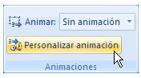
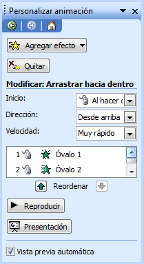
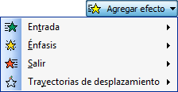
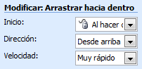

Animar presentación
Para captar la atención de la audiencia, además de agregar imágenes y texto en una presentación, en Microsoft PowerPoint puede agregar efectos visuales con aspecto profesional que dan movimiento a los objetos de la diapositiva:
| 1 | Haga clic en el texto u objeto que desea animar. | ||||||||||||||
| 2 | En la ficha Animaciones, en el grupo Animaciones, seleccionar la opción Personalizar animación.
 |
||||||||||||||
| 3 | Aparecerá en el panel de tareas las opciones para crear la animación del objeto.
 |
||||||||||||||
| 4 | En la parte superior se elegirá cuándo se desea que se active el efecto.
 |
||||||||||||||
| 5 | Ya que se seleccionó el efecto, se tiene que establecer cuándo inicia el evento, para ello seleccionemos de la lista "Inicio" (Start) la opción que necesitemos
 |
||||||||||||||
| 6 | Realice el mismo procedimiento para el resto de los objetos que desee animar.
>>>>>>> 090806781b392a94e507c564f25af3bd4583d419
Animar presentaciónPara captar la atención de la audiencia, además de agregar imágenes y texto en una presentación, en Microsoft PowerPoint puede agregar efectos visuales con aspecto profesional que dan movimiento a los objetos de la diapositiva:
|